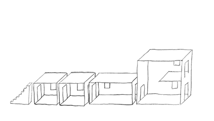
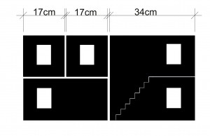
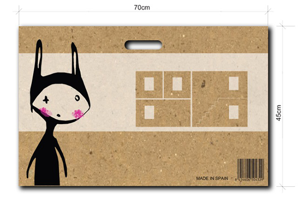

El material
El cartón de la casa es un material reciclabe, ligero pero muy resistente que facilita los cambios y las combinaciones entre los módulos. Es de color blanco y permite pegarlo y pintarlo con espray para conseguir un diseño exclusivo en cada una de las habitaciones de la casa.
En las secciones de accesorios y decorar encontrarás diferentes propuestas para personalizar tu casa.
El tamaño

Imprimibles gratuitos
Los encontrarás en accesorios que está en el menú de la casa.
La idea
La casa de Kids Mobile Box permite muchas variaciones e infinita posibilidades. El juguete es muy fácil de usar y además estimula la imaginación y la creatividad.
La casa
Todas las partes que componen la casa son variables. Los diferentes módulos del juguete permiten crear desde una sola casa a un rascacielos, una vivienda con patio o un adosado. Las piezas, de diferentes tamaños combinables entre sí, posibilitan construir ilimitados edificios, desde un castillo a una tienda o una estación de trenes. La versatibilidad de Kids Mobile Box radica en que cada día se puede asignar diferentes funciones a cada una de las habitaciones: lo que hay en la sala de estar, mañana puede ser la cocina. Además, el tamaño de la casa es perfecto para jugar con diferentes muñecos como los Playmobil, o la familia Silvians.
La maleta
